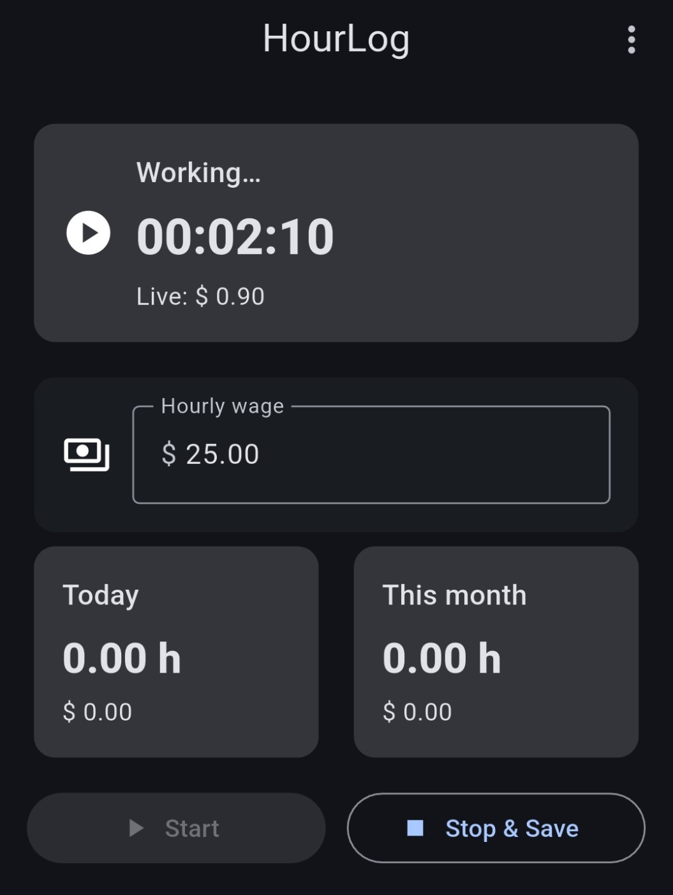
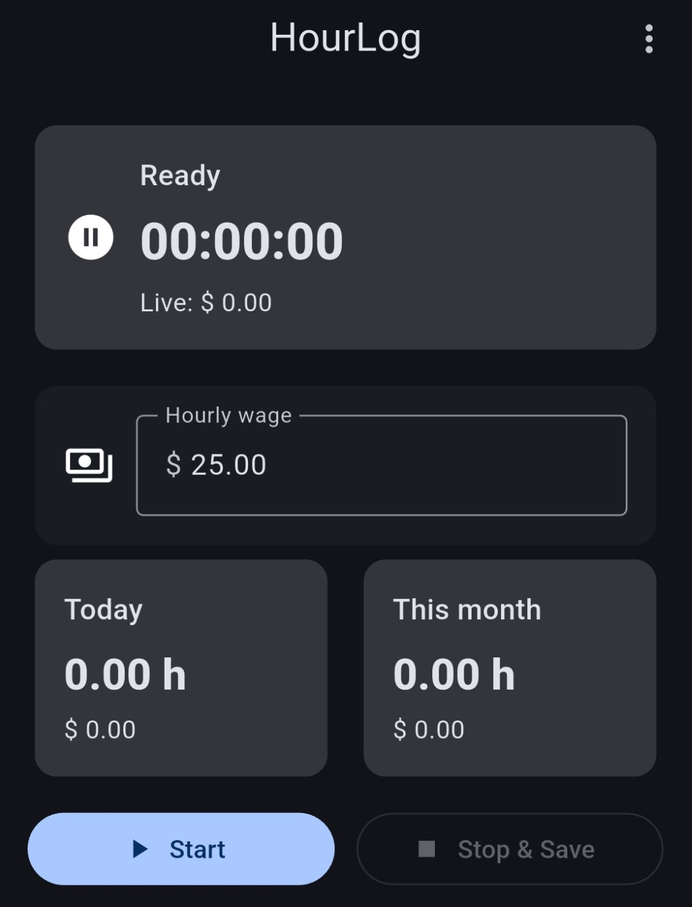
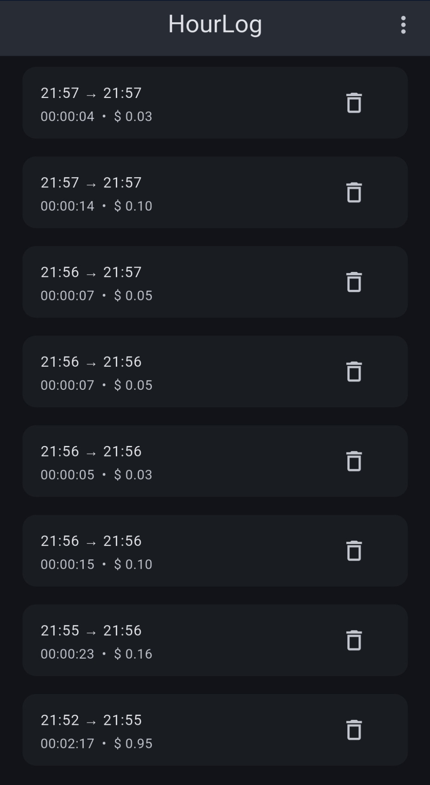
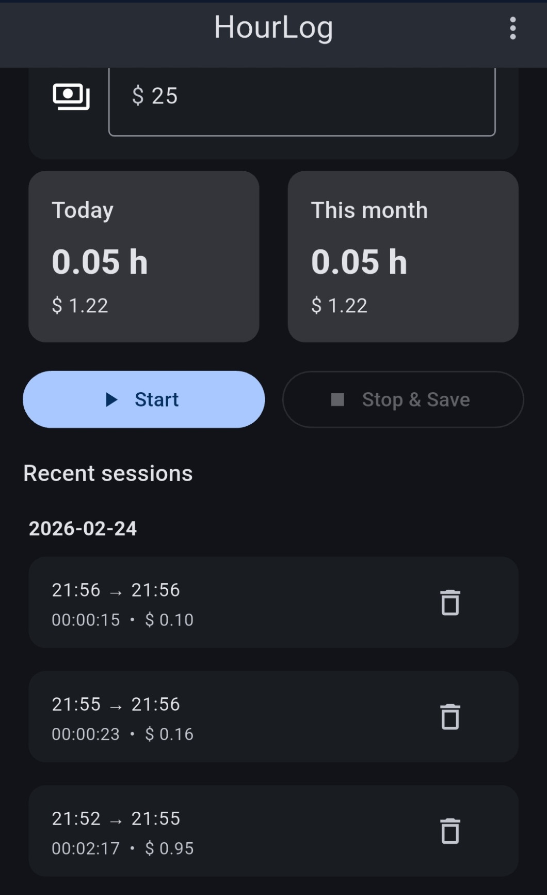

Track work hours and keep your earnings in view.
HourLog is a simple Android app for tracking work sessions, monitoring live earnings, reviewing recent activity, and checking daily or monthly totals in one clean interface. It is made for people who want a practical work hours tracker, pay tracker, and session history app without the clutter of more complicated systems. Whether you are tracking short shifts, freelance time, side jobs, or regular work blocks, HourLog gives you a fast and readable way to stay on top of your time and pay.
Watch your session and earnings update live
HourLog makes it easy to see your current work session while it is happening. The live tracking screen shows the running timer, your current working status, and your estimated live earnings in a clean layout that is easy to read at a glance. This is helpful if you want to know exactly how long you have been working and how much that active session is worth so far. For anyone looking for a simple work timer or live pay tracker, this view keeps the most important information front and center.

Set your hourly wage and start in seconds
The app is built to be simple from the first tap. You can enter your hourly wage, see the ready state clearly, and start tracking without dealing with complicated setup screens. The dashboard also keeps your main totals visible, which makes it easy to understand your current position before and after each session. This is useful for people who want a lightweight hourly wage tracker or a simple Android app for starting and stopping work sessions quickly.

Review and manage all your tracked sessions
HourLog keeps recent sessions organized in a clear list so you can quickly review your work history. Each entry shows the recorded times and the money earned for that session, making it easier to understand how your tracked work adds up over time. This screen is useful if you want a straightforward overview of recent work sessions, especially when you need a quick record of what you logged. It also makes the app feel practical for everyday use, because your tracked time is not hidden away in complicated menus.

See daily and monthly totals together with recent sessions
HourLog gives you a simple overview of what you have earned today, what you have earned this month, and what recent sessions contributed to those numbers. This makes it easier to keep track of short-term progress and longer running totals in one place. If you want a clean Android earnings tracker that combines daily totals, monthly totals, and recent session history, this view shows how the app keeps those details easy to understand.

A simple Android app for work hours, pay, and session tracking
HourLog is designed for people who want a clean and practical way to track time worked and estimated earnings. Instead of overwhelming the user with too many settings, the app focuses on the essentials: start and stop a session, enter your hourly wage, check live earnings, review recent sessions, and keep an eye on daily and monthly totals. That makes it useful as a work hours tracker, pay tracker, earnings tracker, and session history app for Android.
The app is especially helpful for freelancers, contractors, shift workers, part-time workers, and anyone who wants a quick overview of time and pay. If you regularly need to track short work periods or want a better sense of what your time is worth during the day, HourLog gives you a lightweight solution that stays easy to use. By combining live tracking, session history, and summary totals in one interface, the app provides a simple workflow from starting a session to reviewing past work.
For people searching for an Android time tracker, hourly wage tracker, shift tracker, or app to estimate earnings from worked hours, HourLog offers a clean alternative that focuses on clarity and speed. The goal is to help you spend less time managing your tracker and more time actually working, while still keeping the important numbers visible whenever you need them.